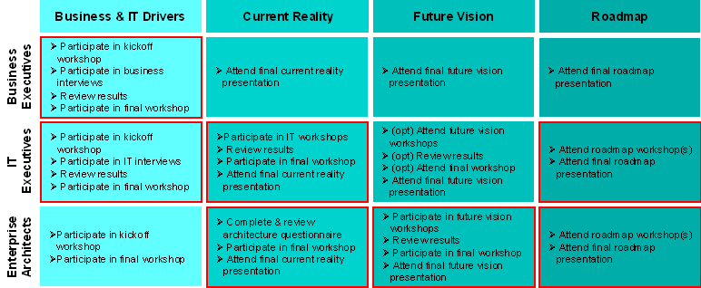
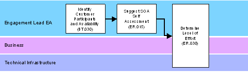
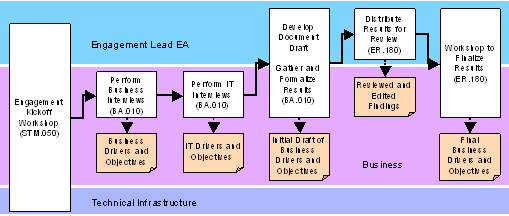
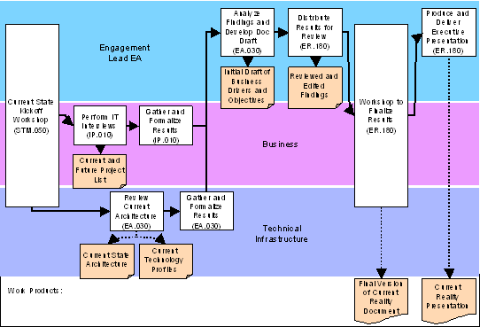
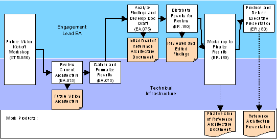
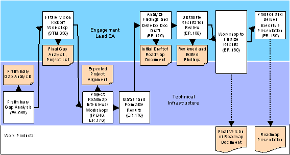

OUM |
SOA Reference Architecture Planning Supplemental Guide |
||
Method Navigation |
Current Page Navigation |
||
|
|
||||||||
This document contains OUM supplemental task guidance for the execution of a service based on the SOA Reference Architecture Planning View.
The task guidelines in this document should be used to supplement the guidelines that appear in the OUM Task Overviews.
During Mobilization the foundation for the engagement is made. This includes scoping of the engagement, determining of the level of effort, and identifying enterprise participants and scheduling constraints. It also includes the identification and discovery of relevant existing enterprise documentation, the identification and assignment of the required enterprise resources, including the level of effort required and schedule for these enterprise resources.
Customization of this view or combining elements of this view with other SOA views should be done at this point of time. In fact, if multiple views are combined, then the Mobilization Phases of each view are effectively combined in order to fully scope, schedule, and staff the engagement.
The main focus is on the second step of the task,“Identify customer (end user) stakeholders."
IDENTIFY CUSTOMER PARTICIPANTS AND AVAILABILITY
Engagements based on this view produces results that are highly tailored to the individual organization. The architecture and Roadmap require frequent input and discussion from various stakeholders across the organization. As such, the success of this type of engagements depends greatly on the availability of key participants and their ability to elaborate on business and technical issues that affect the outcome. At this point, it is necessary for the organization to identify by name the participants and their availability. Commencement of the engagement is dependent upon the availability of the participants.
The key enterprise participants represent stakeholders of various disciplines. Each has a key role in determining the architectural vision, the drivers that shape the vision, and an understanding of how current and future projects may help realize that vision. The three types of stakeholders are:
The following Participation Matrix summarizes, by phase, the activities in which each participant may be involved. Red outlined boxes indicate that the stakeholder plays a primary role in that area of the engagement.

Basically, the engagement begins with a focus on defining business and IT drivers, and transitions into a more technical focus. Therefore, availability of business and IT executives is most important up front. There is more overall involvement required from the technical audience, but the technical steps tend to follow the business workshops.
Business executives (or IT Liaisons) must be available to participate in interviews or workshops during the (Business and IT Drivers area of delivery and be available to review the results later during the same area. The interview/workshop is expected to be up to a half day in length, and ideally all business executives attend together. The final workshop may take another half day depending on the number of participants and time it takes to reach consensus. Beyond this area, business executives are encouraged to attend the final presentations of each subsequent area.
IT executives are primarily involved in interviews or workshops in the first two areas of the engagement. The workshops could range from 4-8 hours each, depending on the depth of material covered. Optionally, IT executives may participate in Future Vision architecture workshops. They are also encouraged to attend the final presentations of each subsequent area.
The enterprise architecture group is instrumental to the completion of Current Reality, Future Vision, and Roadmap. They will be involved in a series of workshops, and will take part in the initial elaboration and final review of delivery materials. Other than attending the initial and final workshops, participation is recommended, but not essential, in the Business and IT Drivers area.
During this type of engagement, the maturity assessment is about conducting an assessment to determine the SOA maturity. Consider having the organization complete a SOA Self Assessment.
Enterprise representatives assigned to the SOA Reference Architecture engagement should take the SOA Self Assessment during Mobilization. The findings are then analyzed and synthesized prior to the start of the Business and IT Drivers area. The results are used to help determine the length of the engagement and to better understand the organization’s strengths and weaknesses with regards to SOA.
Review the following guidance for ER.020, Determine Envision Engagement Strategy and ER.030, Set and Agree on Plan for Envision Engagement for how engagements are run and what kind of work products should be expected.
During Mobilization, you should determine the strategy for the engagement and make the detailed plan. Below are some guidelines for each area of the engagement.
Mobilization is designed to help ensure a successful delivery of the SOA Reference Architecture engagement. It is primarily performed by the lead enterprise architect, but may include other team members as needed. The intent of this area is to identify enterprise participants and their scheduling concerns and to develop a better understanding of the level of effort required to deliver the service for a particular organization. The high-level workflow of Mobilization is shown below.

The color lines indicate a specific area of expertise or competency that is required in multiple areas of the engagement. A number of roles would fit into one of these. Using this kind of color-coding, including a name indicating the competency it represents, provides the ability to divide effort between multiple people based on competency. Such a colored line is later referred to as a competency swimlane. Each person belonging to a competency swimlane can easily determine where there is required effort for each area of the engagement.
As the reference architecture defines a future state vision, it is important for that vision to satisfy the needs and objectives of the business and IT. The purpose of this area is to determine what those needs and objectives are. During the Business & IT Drivers area executives from the Lines of Business (LOB), and IT department(s) are interviewed to get their perspective on drivers that might affect future vision enterprise architecture. It is also a good opportunity to discuss SOA and how they perceive its effects on the company.

This area primarily involves persons from the Business competency swimlane since the focus is on business and IT drivers. Other than the engagement kickoff workshop, which is the primary responsibility of people from the engagement lead enterprise architect competency swimlane, all other activities are mostly related to the Business competency swimlane. People from the Technical Infrastructure competency swimlane may participate in the kickoff workshop, but are not required for any other activity in this area.
The purpose of this area is to obtain an understanding of the current state of IT. Topics of interest span both technical and business concerns. From a technical perspective, you collect information on current enterprise architecture, including key systems, infrastructure, and security, delivery channels, as well as development and operations and management technologies, and deployed products. In addition, you interview IT executives regarding the current and future projects.
The results of this area are formalized into a Current Reality Definition document, and an executive level presentation. Information about the existing enterprise architecture and current and future projects will factor into the Roadmap document.

Following the kickoff meeting, the people from the Business and Technical Infrastructure competency swimlanes are involved in the information gathering activities. Once the initial results are gathered and formalized, the engagement lead enterprise architect analyzes the findings, develops the draft of the current state work product and prepares for the workshop to finalize findings. After the workshop, the engagement project manager prepares and delivers the executive presentation to complete the Current Reality area.
The purpose of Future Vision area is to define a future vision for IT based on SOA. The vision should be traceable to the business drivers, IT objectives, anticipated SOA benefits, and architecture principles that have already been defined, as well as those that arise as a result of workshops conducted during this area. The output of this area is the SOA Reference Architecture document, which describes the vision and the factors used to create it.

The basic formula to arrive at the Future Vision is:
As the Future Vision focuses on a technical vision, the information gathering activities belong to the Technical Infrastructure competency swimlane. The engagement lead competency swimlane assists by providing leadership in the form of handling kickoff and finalization workshops, and delivery of the executive presentation.
The purpose of the Roadmap area is to produce a Roadmap for the organization that describes a pragmatic way to achieve their Future Vision goals. In previous areas, Current Reality and Future Vision were defined. A gap analysis can be obtained by comparing these two states and documenting the differences. Essentially, the Roadmap lays out incremental steps over time to close the gap between Current State and Future Vision.
In order to create a manageable level of scope, the Roadmap is not intended to include all aspects of Future Vision SOA. The focus should be limited to core aspects, such as infrastructure plans and infrastructure services. It may also include some connectivity services if specific services have been identified as key reusable enterprise assets. The Roadmap should not attempt to address other types of services, such as business and presentation services, nor should it stray from SOA infrastructure into related areas such as enterprise data rationalization and composite application delivery.

Over the course of this area, you will work with the organization to:
The Roadmap area involves the Engagement Lead and the Technical Infrastructure competency swimlanes. Activities such as the kickoff workshop, Roadmap finalization workshop, and executive presentation primarily involve people from the Engagement Lead competency swimlane. Activities focused on gathering and evaluating technical information are designated as belonging to the Technical Infrastructure competency swimlane.
At the end of Mobilization, when you have produced a plan for the engagement, you need to validate and gain agreement with the organization prior to starting the Business and IT Drivers area.
This is actually the first area of the actual engagement execution. During Business and IT Drivers, the business and IT drivers are collected that affect future vision reference architecture decisions. You should also collect the benefits and challenges that management perceives to be associated with SOA. The results are factored into reference architecture workshops and listed in the reference architecture document.
At the beginning of each area of the engagement (with the exception of the first, Mobilization), this team orientation is typically executed as a kickoff workshop. The intent is to bring together all people that will be expected to contribute to the service to discuss what will be taking place. The kickoff workshop typically covers what is expected as a result of the engagement as a whole or the area in question, what kind of activities it includes and what kind of involvement is expected from the enterprise participants. In addition, where appropriate, it educates the organization on the terminology and concepts relevant for the area.
The Business and IT Drivers kickoff workshop is actually the kickoff for the whole engagement. It also serves to inform enterprise stakeholders that they have management backing and their participation is required. Therefore, when you set the meeting schedule, you should arrange for an appropriate management representative to present parts of the workshop, preferably as an introduction, and if possible also at the end during the summary of the workshop.
The workshop provides an opportunity to explain what the engagement as a whole entails, what it is meant to provide for the organization, what participation is needed and what to expect as the result of the engagement. In addition, the kickoff meeting is a good opportunity to outline who the enterprise participants are and provide a rough timeline of their activities. Doing so provides the forum for discussion about who should be participating and allows people the chance to volunteer or decline involvement up front.
You do not build a full Motivational Model, but should understand the Business Strategy in the context of the engagement.
You would typically execute the following task steps:
In addition, you should try to obtain a list of current IT objectives.
The intent of the business interviews is to obtain an understanding of the key business drivers affecting the company. Example business drivers are:
Business drivers should be obtained from the most senior business executives willing to participate. In some cases, that might be representatives from the LOB, and in other cases it might be IT liaisons to the LOBs. If multiple organizations are taking part in the service, then multiple interviews may be needed to get input across each LOB. Business executives should also be asked about their plans for SOA – what they feel it means to them, both in terms of benefits and challenges. The results of their SOA Self Assessments (ER.015) would provide a good starting point for this discussion.
Following the business interviews, IT executives are interviewed to obtain a list of current IT objectives. Example IT objectives are: rationalize business processes into reusable services, increase visibility into siloed data, etc. During the interview it would be helpful to provide the list of business drivers as a reference. Ideally, business drivers will map to a set of IT objectives, which helps provide continuity to the vision strategy. SOA should also be discussed with IT executives in order to understand their perceived benefits and challenges. SOA Assessment results can be factored into the discussion.
You end the Business IT and Drivers area with a workshop to finalize the results of the area. You use the three task steps from the base task during this type of engagement, but the preparation is more extensive. Use the following additional guidance.
The preparation of the executive presentation for the Business and IT Drivers area consists a workshop where the results are verified and finalized. The outputs from the Business and IT Drivers area should be formalized into the draft version of a findings document that is sent out to all business and IT executive participants for review and comments. The document should be short and to the point; simply list the findings.
INPUT: List of Business Drivers, List of It Objectives, Combined SOA Benefits, SOA Challenges
OUTPUT: draft Findings document
RESOURCES: Business stream consultants gather and formalize results. The engagement lead enterprise architect is responsible for producing and distributing the document draft.
The purpose of this workshop is to provide the opportunity for all who participated in the interviews to get together and finalize the results. The workshop may be skipped if very few executives are involved in the process and minimal edits were received to the findings document. The workshop should consist of a presentation that covers the findings, and the opportunity to discuss, challenge, accept, modify, or reject each.
In order to provide a starting point for the SOA Infrastructure Roadmap, an understanding of the current state of IT must be obtained. An assortment of workshops, interviews, and questionnaires may be used to collect information on the current enterprise architecture, infrastructure, technologies, and products, as well as IT organizational structures, governance, and project funding models. The Current Reality area involves both business and technical resources, but with an extra emphasis on staff with Technical Infrastructure knowledge, as most information gathered pertains to areas of technology. A Current Reality Definition document and executive presentation are produced, and the current reality is used as a starting point for the infrastructure roadmap.
At the beginning of each area of the engagement (with the exception of the first, Mobilization), this team orientation is typically executed as a kickoff workshop. The intent is to bring together all people that will be expected to contribute to the service to discuss what will be taking place. The kickoff workshop typically covers what is expected as a result of the engagement as a whole or the area in question, what kind of activities it includes and what kind of involvement is expected from the enterprise participants. In addition, where appropriate, it educates the organization on the terminology and concepts relevant for the area.
Current Reality should begin with a kickoff meeting to discuss what has been accomplished so far with the engagement and what will be taking place in this following area. It provides a good opportunity to refresh everyone’s perspective on the purpose of the engagement and the importance of continued support and participation.
The meeting agenda should include an overview of the tasks that make up this area and participants that will be involved. A schedule of activities and expected completion dates should be agreed upon.
This task is executed in parallel with EA.030, Identify Current Architecture, during these kind of engagements. For the review of the architecture principles and guidelines, you would typically execute the first 3 task steps of EA.010 during the Current Reality area, but not require any sign-off.
The architecture principles and guidelines of specific interest are:
Note: As a point of clarity, the following definitions should be used:
Principle – An unequivocal statement defining the future vision reference architecture. Principles should dictate direction and require formal permission for variance.
Guideline – Guidance to architects and designers on how to implement the architecture principles in given scenarios. Guidelines represent a suggested course of action, less stringent than principles.
This task is executed in parallel with EA.010, Review Enterprise Architecture Principles, Guidelines and Standards, during these kinds of engagements. You perform a current reality assessment on the enterprise architecture. This is executed early in the engagement, as part of the Current Reality area.
Use the base task guidelines in EA.030 to execute this task. Following the Current Reality kickoff meeting, it should be clear who to speak with concerning enterprise architecture, and what method of gathering information is most appropriate.
In addition to the steps described in the base task guidelines, while talking with IT executives, it would be beneficial to discuss current and future projects (IP.010). The intent is to get an understanding of which projects might be capable of being the first to contribute to the SOA infrastructure. Later, in the Roadmap area, the objective will be to identify 1-3 projects that can help to deliver on the Infrastructure Roadmap Plan.
During the Current Reality area, it is beneficial to discuss current and future projects with the IT executives. The intent is to gain an understanding of which projects might be capable of being the first to contribute to the SOA infrastructure. Later, in the Roadmap area, the objective will be to identify 1-3 projects that can help to deliver on the Infrastructure Roadmap Plan.
For the task step, “Document cost and objectives,” you are only interested in the objectives of each project. At this point, you will not go as far as to investigate any overlap and redundancy.
You end the Current Reality area with a workshop to finalize the results of the area. In addition, at the end of Current Reality, you conduct an executive presentation. The preparation of the executive presentation consists a workshop where the results are verified and finalized. You use the three task steps from the base task during this type of engagement, but the preparation is more extensive. Use the following additional guidance.
Information gathered during the Current Reality area is used to produce an initial draft of the Current State Definition document. The document should be sent out for review by all enterprise participants involved in this point of the engagement.
INPUT: Current State Enterprise Architecture and IT Information
OUTPUT: draft Current Reality Definition
RESOURCES: Business and Technical Infrastructure Stream consultants gather and formalize results. The engagement lead enterprise architect is responsible for producing and distributing the document draft.
The purpose of this workshop is to provide the opportunity for all who participated in the Current Reality area to get together and finalize the results. The workshop should consist of a presentation that covers the findings, and the opportunity to discuss, challenge, accept, modify, or reject each finding.
At the end of the Current Reality area you should hold an executive presentation in addition to the workshop. Highlights of the Current State should be formalized into an executive presentation. The executive sponsor of this service should determine the attendance of enterprise representatives. The engagement project manager should determine attendance of other representatives. The intent is to share findings and results with executive management, and also to re-introduce the next area of the engagement and the benefits it provides. This also serves as an executive checkpoint on the progress of the engagement, effectively a go/no-go decision point to continue with the next area. If the organization elects not to continue with the engagement, then plans to terminate the effort must be made.
The purpose of Future Vision is to help the organization define a future vision SOA reference architecture, roughly 2-3 years out. Using a series of workshops, you will guide the enterprise representatives through various aspects of SOA, infrastructure, and technology. The result is an SOA reference architecture that is tailored to the organization’s business and IT drivers, vocabulary, technology preferences, and architectural standards. The Future Vision area mostly involves Technical Infrastructure and Engagement Lead resources. The SOA Reference Architecture document and executive presentation are produced during this area. The future vision also factors into the infrastructure roadmap.
At the beginning of each area of the engagement (with the exception of the first, Mobilization), this team orientation is typically executed as a kickoff workshop. The intent is to bring together all people that will be expected to contribute to the service to discuss what will be taking place. The kickoff workshop typically covers what is expected as a result of the engagement as a whole or the area in question, what kind of activities it includes and what kind of involvement is expected from the enterprise participants. In addition, where appropriate, it educates the organization on the terminology and concepts relevant for the area.
Future Vision should begin with a kickoff meeting to discuss what has been accomplished so far with the engagement and what will be taking place in this following area. It provides a good opportunity to refresh everyone’s perspective on the purpose of the engagement and the importance of continued support and participation.
The meeting agenda should include an overview of the tasks that make up this area and participants that will be involved. A schedule of activities and expected completion dates should be agreed upon.
When determining the Technology Reference Architecture for SOA – called the SOA Reference Architecture – there are certain elements that should be covered. For any situation that involves a set of SOA services of any significant size, or if the enterprise has embraced SOA as an IT strategy, it is important to determine and document a consistent strategy for service implementation. Failure to establish such a strategy might result in an inconsistent service implementation and may negate the advantages of using a SOA approach by greatly hampering reuse.
Therefore, during this task, you define the SOA Reference Architecture that will be used at the enterprise level, one of the most important parts being the definition of the layers of the SOA architecture. The SOA Reference Architecture should describe how services should be implemented in the enterprise architecture, what kind of services should be located where (in what layer or tier), and what access and communication mechanisms should be used as well as define a target for implementation over a few years.
The SOA Reference Architecture should cover:
Guidelines for points 1 and 2 above are available in the Service Architecture technique. Some of these topics also relate to the Enterprise Architecture Principles, Guidelines and Standards (EA.010) and may need to be recorded in the Enterprise Repository as enterprise-wide rules.
The Future Vision for the SOA Reference Architecture is preferably crafted from a series of workshops that address various aspects of enterprise architecture and the project lifecycle. The number of workshops may vary depending on the availability of key participants, the number of participants, and the efficiency with which each topic can be covered.
As preparation to the SOA Reference Architecture workshop, consider:
Most people have a different understanding of what is a service, depending of their background, level of experience with SOA, etc. The first part of the SOA Reference Architecture is concerned with defining what is a service, what is it's composition, etc. See the Service Architecture technique for more details.
SOA layers provide a means to organize application user interfaces and services in similar groupings. There is not necessarily a direct relationship between SOA service layers and the physical infrastructure tiers. SOA service layering is chiefly concerned with establishing the architectural decoupling such that processes and data can be more readily distributed and deployed. It allows for defining different types of services and then the different policies or rules that apply to them. For example, you may define that a data service must use objects from the enterprise canonical data model, whereas a presentation service does not.
See the Service Architecture technique for more details on how to perform this step.
The details of the infrastructure required to run the SOA is also an important part of the SOA Reference Architecture. This may include a choice of Enterprise Service Bus, Enterprise Repository, BPM tooling, etc. In this section, describe the functions that the components you need carry out and how these components interact with each-other. It is recommended to leave this section technology and product agnostic and detail the products in the Implementation section below.
The SOA Security Strategy should include the solutions for the following:
This section should also include a description of how the provisioning process should be monitored, to support governance on the security by the architecture. This aspect should also cover how alerts/reports should be created depending on how services are used (such as halts, interruptions, decline and so on). This should be documented both from a service provider and a service consumer point of view.
The "Implementation View” of the SOA Reference Architecture describes the technology and products required to implement the SOA Reference Architecture defined so far.
Service may be packaged individually or as a group, independently of each other or as part of a common release cycle. In this step, define which strategy the enterprise adopts including the criteria for grouping services, release cycles, etc. See the SOA Release Planning technique for more details on how to perform this step.
The SOA Reference Architecture template can be used to document this task.
The workshops should follow a common basic format where a topic, or set of topics is presented with some recommendations, and enterprise participants engage in relevant discussions to support, modify, or refute the recommendations. Recommendations should be in the form of principles and guidelines that address architecture concerns. Participants should be encouraged to engage in discussions to determine if the recommended principles and guidelines are in line with their ideals as well as their business drivers and IT objectives. They may suggest principles and guidelines in addition to what is recommended. Participants should be encouraged to give careful consideration to the topics to be discussed beforehand so they are prepared to make recommendations and decisions.
Workshops should be conducted to cover architecture principles, guidelines, and vision for the following topics:
Service Definition – How to define a service, e.g., implementation, interface, and contract, recommended interface types, message types, schema rules, contract management
Service Lifecycle – Includes service identification, development, testing, deployment, discovery, versioning, deprecation, and decommission guidelines
Infrastructure Services – How to classify infrastructure services, what services already exist, and what should be built, etc.
Security Services – Possible security services, e.g., fine grained entitlements, auditing, etc.
Connectivity Services – Definition of connectivity services, access mechanisms, (e.g., messaging systems, technologies, strategies)
Data Services – Definition of data services, purpose with the SOA and BPM environments, , data access strategies, and data formats
Business Services – Definition of business services, types of services, (e.g., simple synchronous, composition, workflow, process, and orchestration), and principles that apply to each type of business service
Presentation Services – Definition of presentation services, types of services, and rules that apply
Composite Applications – Enterprise portals, workflow processes, B2B orchestrations that leverage shared services
OA&M Architecture – The role services and SOA infrastructure will play on OA&M, including operational and BPM metrics and the collection of key performance indicators
Business Process Architecture – How SOA and BPM can be combined; top-down service identification approach
Data Architecture – (optional) How SOA will affect: data architecture, plans for enterprise data management, common schemas, and data transformation
Enterprise Social Computing – How SOA may be intended to complement ESC efforts
Event-Driven Architecture – (optional) How SOA will affect: EDA, event generation, collection, processing, and reaction to event conditions
Integration Architecture – How SOA will affect: integration architecture, integration technologies, products and security
Security Architecture – The affect SOA has on security, how applications and services should be secured in the future, what needs to be built, etc.
SOA Service Infrastructure – Necessary components, (e.g., ESBs, registries, O&M tools, service monitoring and compliance tools), and deployment strategy and configurations
Technology Mapping – Preferred standards, current and future products
SOA Modeling Approach – Determine types of models necessary to capture and communicate service relationships, dependencies, and deployment strategy. If available, use the Modeling Strategy for the Enterprise (ER.070) as an input to determine the SOA Modeling Approach.
The recommendations can be culled from a common SOA reference architecture that covers all areas mentioned above using a “same as, except …” approach.
Throughout each workshop, you should:
You end the Future Vision area with a workshop to finalize the results of the area. In addition, at the end of Future Vision, you conduct an executive presentation. The preparation of the executive presentation consists a workshop where the results are verified and finalized. You use the three task steps from the base task during this type of engagement, but the preparation is more extensive. Use the following additional guidance.
Information gathered during the Future Vision area is used to produce an initial draft of the organization SOA Reference Architecture document. The document should be sent out for review by all enterprise participants involved at this point of the engagement.
INPUT: results of Future Vision area workshops
OUTPUT: draft organization SOA Reference Architecture
RESOURCES: Technical Infrastructure Stream consultants gather and formalize results. The engagement lead enterprise architect is responsible for producing and distributing the document draft.
The purpose of this workshop is to provide the opportunity for all who participated in the Future Vision area to get together and finalize the results. The workshop should consist of a presentation that covers the findings, and the opportunity to discuss, challenge, accept, modify, or reject each finding.
At the end of the Future Vision area you should hold an executive presentation in addition to the workshop. Highlights of the Future Vision should be formalized into an executive presentation. The executive sponsor of this service should determine the attendance of enterprise representatives. The engagement project manager should determine attendance of other representatives. The intent is to share findings and results with executive management, and also to re-introduce the next area of the engagement and the benefits it provides. This also serves as an executive checkpoint on the progress of the engagement, effectively a go/no-go decision point to continue with the next area. If the organization elects not to continue with the engagement, then plans to terminate the effort must be made.
The Roadmap area of this view provides the organization with an infrastructure roadmap. Its purpose is to plan an incremental transition from the current state of infrastructure to the future vision. The team uses information from the Current State and Future Vision phases to produce a preliminary gap analysis. Then you work with the organization to finalize the gap analysis, plan roadmap increments, and identify 1-3 projects that may contribute to the infrastructure transition. Projects are then interviewed to further qualify their infrastructure plans and finalize the roadmap. Based on the Future Vision, and comparing it to the Current State, determine how the results of the Roadmap best can be measured and define a Metrics Collection and Reporting Strategy that can be used throughout the process for improvement. This area mostly involves the technical infrastructure and engagement lead resources. The result is an Infrastructure Roadmap document and a final executive presentation.
During the Roadmap area, you perform a preliminary gap analysis based on the differences between Current State and Future Vision. The analysis should focus on the following areas that pertain to Roadmap objectives:
Organizational gaps and roadmap are covered in full detail in the SOA Governance Planning View. As part of this area, you should acknowledge obvious gaps in organization and governance that affect the ability to support a SOA Infrastructure Roadmap. If an engagement has already been executed based on the SOA Governance Planning View, then pertinent information can be obtained from the results of that service. Otherwise, such an engagement could be included as a recommended step in the SOA Infrastructure Roadmap.
Preliminary findings should be included in the Roadmap kickoff workshop (see the following STM.050.4) for the purpose of jump starting the discussions. In addition to the gap analysis, any information collected regarding key future projects, SOA initiatives, planned infrastructure changes, or existing milestones should be included in the presentation.
At the beginning of each area of the engagement (with the exception of the first, Mobilization), this team orientation is typically executed as a kickoff workshop. The intent is to bring together all people that will be expected to contribute to the service to discuss what will be taking place. The kickoff workshop typically covers what is expected as a result of the engagement as a whole or the area in question, what kind of activities it includes and what kind of involvement is expected from the enterprise participants. In addition, where appropriate, it educates the organization on the terminology and concepts relevant for the area.
The purpose of the Roadmap kickoff workshop is twofold. First, it provides an opportunity to introduce the final area of the engagement and discuss the objectives, steps, type of participation required, work product, and level of detail of the work product. Second, it helps to solidify the foundation for the Roadmap and key participants involved in the process.
The workshop should begin with a presentation to outline the Roadmap area of the engagement, followed by a presentation of initial findings. The initial findings would consist of all the information relevant to the Roadmap collected over the previous areas, such as key projects, infrastructure plans, etc., as well as the preliminary gap analysis. Discussions should then take place to produce the following results:
During the Roadmap area, following the roadmap kickoff workshop, a small number of projects may be identified as candidates to contribute infrastructure enhancements toward achieving the Future Vision. The first task step of the base task guidelines, “Determine candidate projects,” is executed in combination with the following task ER.170, Determine Future State Transition Plan. The projects that are of interest are either future projects, either already identified, or identified as part of this process, or new releases for long-term projects.
When executing task steps 2 and 3 of the base task guidelines to determine the goals and dependencies, you should follow up by interviewing the project manager and chief architect of each project, if already identified. In addition to the purpose of the steps, you should determine what the project can contribute to and what the expected timeframe would be. Results can then be mapped back to the Roadmap Plan (ER.170).
Ideally, the people being interviewed are already involved in the SOA Reference Architecture Planning engagement, understand the reference architecture, and are in agreement with the SOA vision. If not, then it would be advisable to invite a senior enterprise representative that will be/is involved in the project (perhaps the enterprise architect and/or enterprise executive sponsor) in order for them to get a better understanding of the engagement initiative. The intent is to ensure the project team that the Roadmap effort has executive backing and is in line with enterprise architecture initiatives. You should be prepared to brief the project team on aspects of the reference architecture that would apply to its infrastructure work products. This is to ensure that work products adhere to principles and guidelines outlined in the reference architecture.
During the Roadmap area, following the Roadmap kickoff workshop, you execute this task combined with IP.040, Identify Candidate Projects. That means that the step, “Provide a transition plan,” typically will be made through the identification of candidate projects. Please review the supplemental guidelines for IP.040, Identify Candidate Projects for more details about how to identify the relevant projects.
When the Future Vision is clear and the strategy is determined on how to achieve that vision, you should start to determine the areas relevant for metrics collection to be able to measure the results against the vision. Executing this task as part of the Roadmap area will make it clear how the effect of the new Reference Architecture should be measured, and if required to act upon. By using the Metrics Collection and Reporting Strategy defined during this task, the actual benefits will be measured, and if the expected benefits are not achieved within the expected timeframe, it allows the organization to make early changes and corrective actions.
You end the Roadmap area with a workshop to finalize the results of the area. In addition, at the end of Roadmap, you conduct an executive presentation. The preparation of the executive presentation consists a workshop where the results are verified and finalized. You use the three task steps from the base task during this type of engagement, but the preparation is more extensive. Use the following additional guidance.
Information gathered during the Roadmap area during the workshops and in the interviews is used to produce an initial draft of the SOA Infrastructure Roadmap document. The document should be sent out for review by all enterprise participants involved at this point of the engagement.
INPUT: results of Roadmap area workshops and interviews
OUTPUT: draft SOA Infrastructure Roadmap document
RESOURCES: Technical Infrastructure Stream consultants gather and formalize results. The engagement lead enterprise architect is responsible for producing and distributing the document draft.
The purpose of this workshop is to provide the opportunity for all who participated in the Roadmap area to get together and finalize the results. The workshop should consist of a presentation that covers the findings, and the opportunity to discuss, challenge, accept, modify, or reject each finding.
At the end of the Roadmap area you should hold an executive presentation in addition to the workshop. Highlights of the Roadmap should be formalized into an executive presentation. The executive sponsor of this service should determine the attendance of enterprise representatives. The engagement project manager should determine attendance of other representatives. The intent is to share findings and results with executive management, and also to re-introduce the next area of the engagement and the benefits it provides. This also serves as an executive checkpoint on the progress of the engagement, effectively a go/no-go decision point to continue with the next area. If the organization elects not to continue with the engagement, then plans to terminate the effort must be made.
The discussion following this end presentation of the engagement may identify some questions or challenges that need to be addressed for the engagement to be accepted. It should be positioned, during the presentation, that the enterprise executive sponsor takes responsibility for the resolution of any such unresolved items. This alleviates any need to get the enterprise executive audience back together to deliver another version of the presentation, and expedites the completion of deliverables by creating a single interface point. When the take-away items are completed to the satisfaction of the executive sponsor, the engagement project leader should obtain written approval of the acceptance of the engagement. This acceptance is done as part of Post Delivery, task SM.050 - Gain Acceptance.
Following the successful completion of an engagement, a few post-delivery activities should take place, i.e., acceptance sign-off and documenting lessons learned.
After the project has been delivered and accepted any feedback should be summarized and submitted to Oracle's Global Methods team at ominfo_us@oracle.com. Feedback should include the following:

Copyright © 2006, 2016, Oracle and/or its affiliates. All rights reserved.